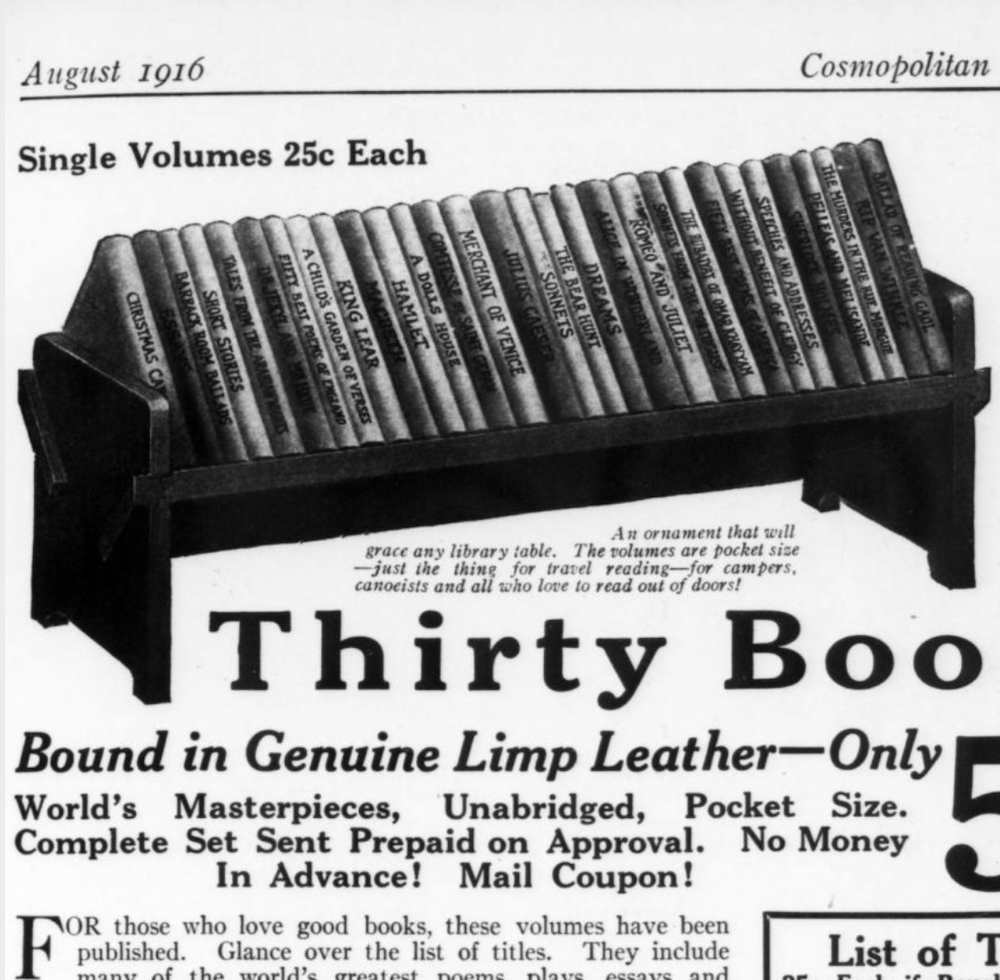
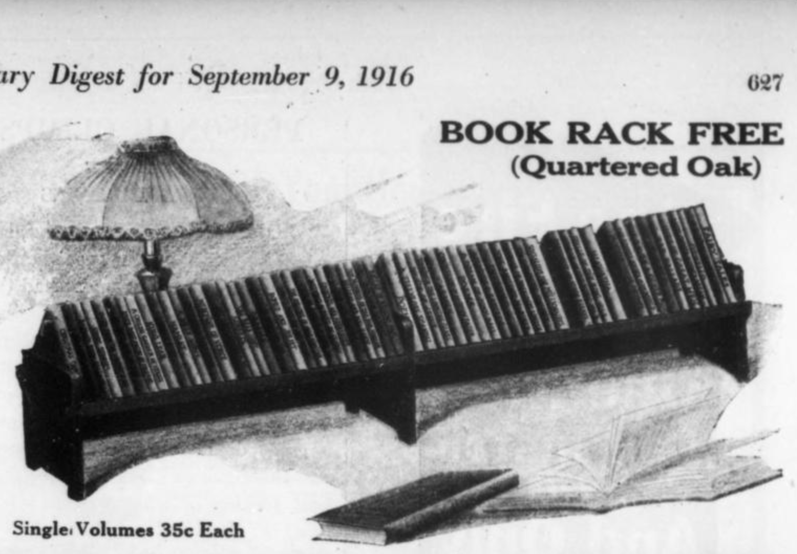
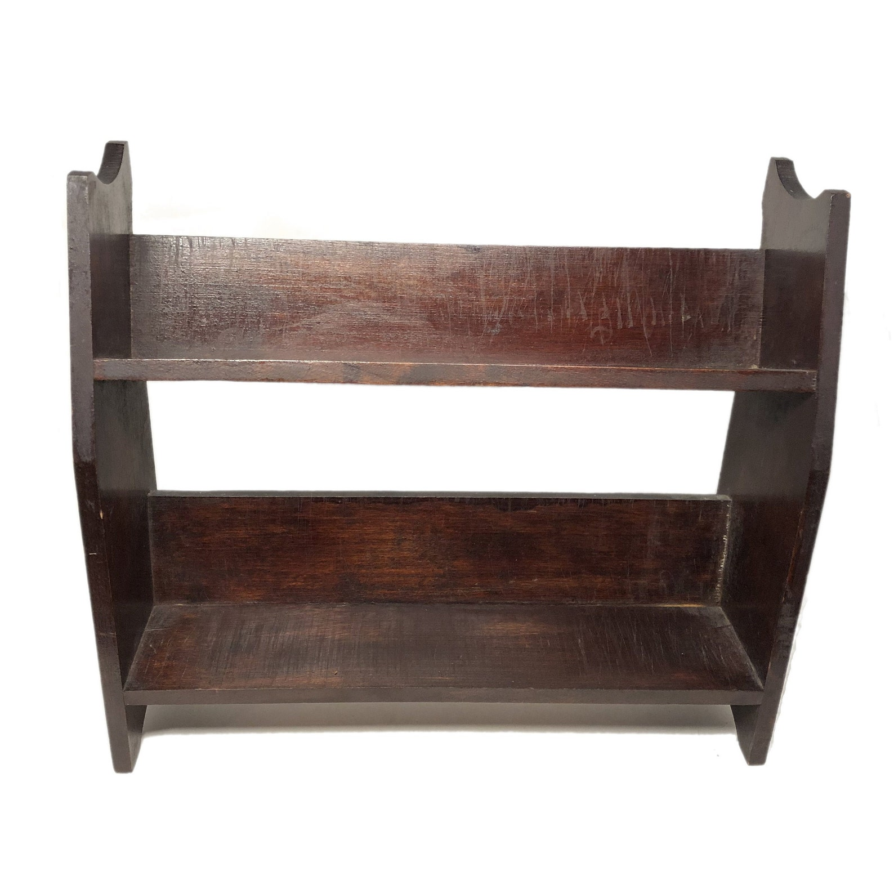
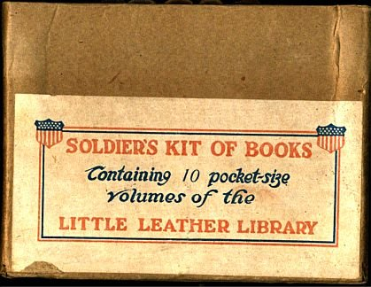
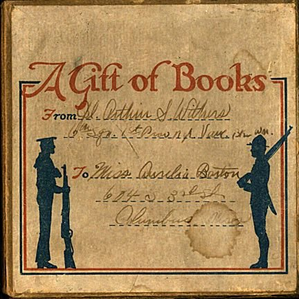
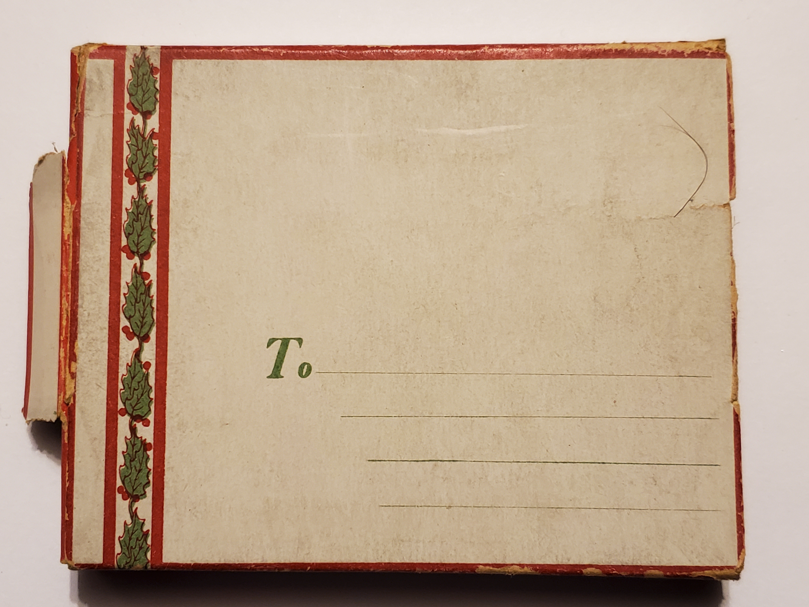
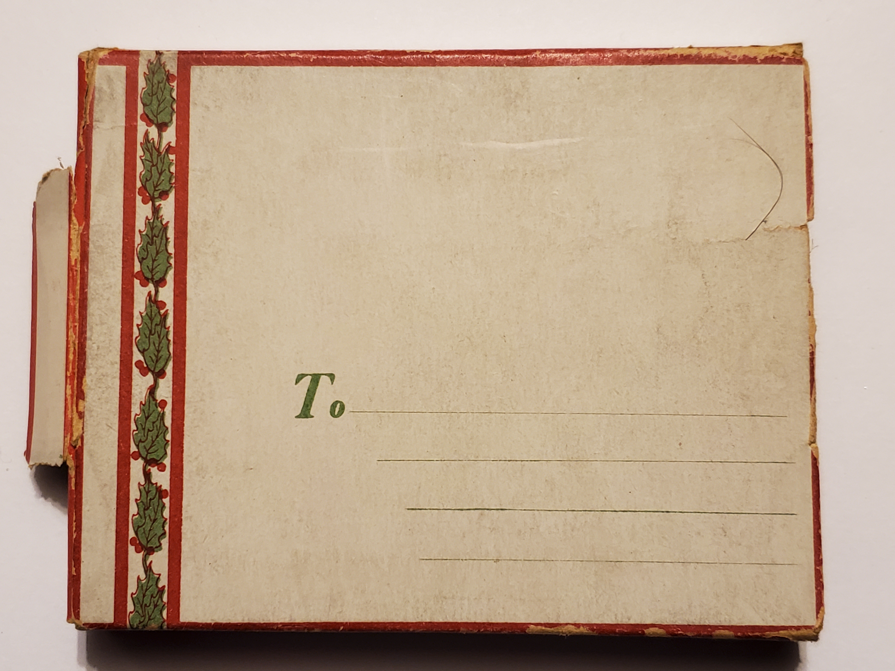
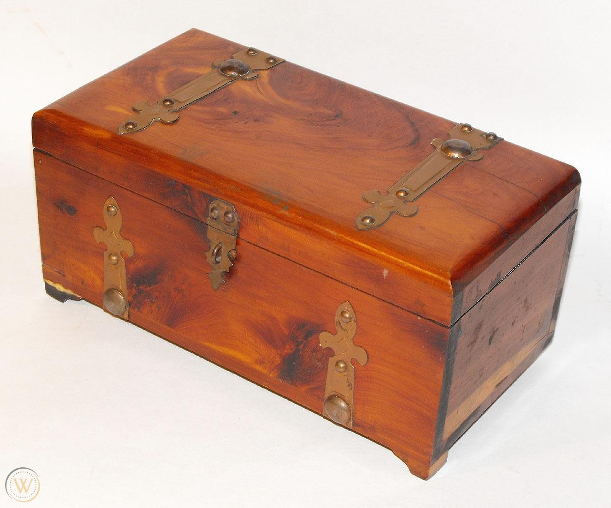
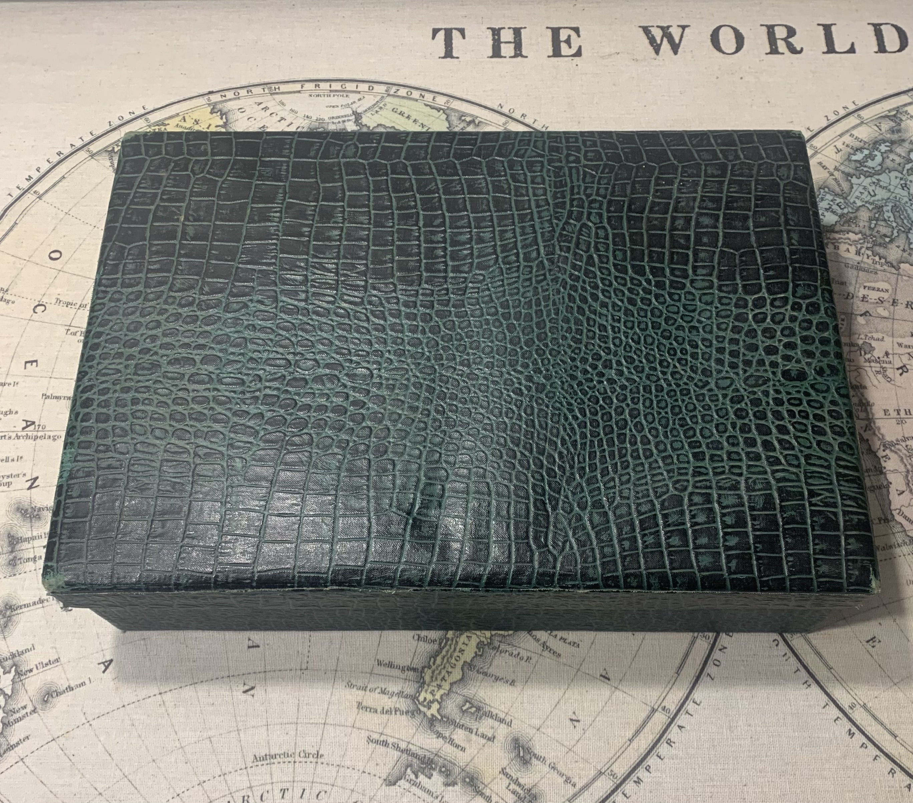

Little Leather Library
Boxes, Racks & Cases
Below are some bookends, cases, and boxes that were sold by the Little Leather Library Co. in special deals or as promotional items. Click any photo below to view larger in another tab.
-

30-Book Quartered Oak Book Rack, 1916
Purchaseable with sets of 30 leatherbound books. The ad on the left was printed in a 1916 issue of the Cosmopolitan. While the rack in the photo on the right does not look exactly as advertised, it is believed to be from LLL.
-

60-Book Quartared Oak Book Rack, 1916
These were given for free with any purchase of a set of 60 leatherbound books. I've been unable to find a good photo of it. This ad is was printed in The Literary Digest in 1916, Vol 53 Iss 11. I'm not sure if it's just 2 of the 30-Book racks side by side or if it's all 1 piece.
-

60-Book 2-tier Quartared Oak Book Rack, 1916
These were included upon purchase of a set of 60 leatherbound books.
Photo source: Etsy seller CasitaAzul1950 -

Soldier's Kit of Books 1917 - 1918
Little Leather Library books could be purchased to send directly to soldiers fighting in WW1. Set of 5 or 10 came with a kit box, buyers could take their choice from over fifty titles, according to this ad clipping from the New Republic. Tan limp leather bindings with blind-stamped floral borders and titles, as shown in these photos here and here.
-
 Mailing Box for A Christmas Carol by Charles Dickens
Mailing Box for A Christmas Carol by Charles DickensIn the mid-1920's it was possible to send this book as a gift directly to the recipient. Inside the box includes an illustrated memo that says "I'm sure the best greeting this merrisome day is to wish you a good Christmas this Dickens-y way".
-

Miniature Cedar Chest/Trunk, 1924?
Sold with the Holy Bible set of 30, or sets of various leatherette brown volumes. I haven't been able to locate any ads mentioning it.
Photo source: WorthPoint -

60-Book Faux Alligator Skin Box/Case, 1916?
I've been unable to find any ads for this. I'm unsure of the connection with LLL exactly, but the seems to fit the books very well in two rows perfectly sized for 60. I own one set with the 60 floral bordered leather books it sold with, and I've seen one other in a listing as well with the same types of LLL books in it.